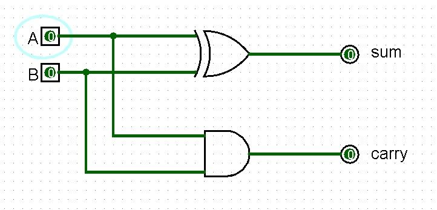
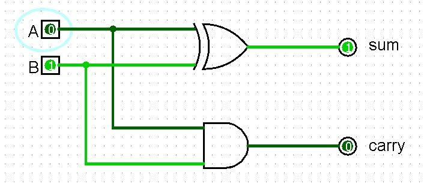
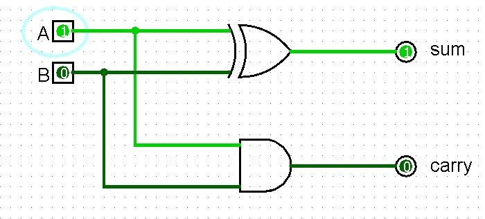
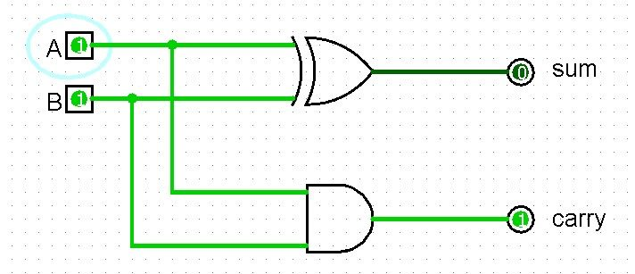
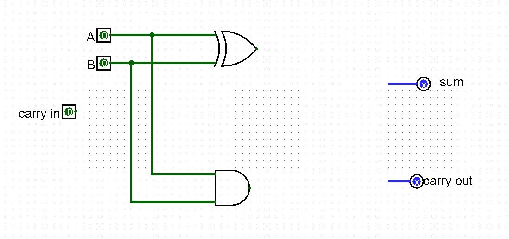
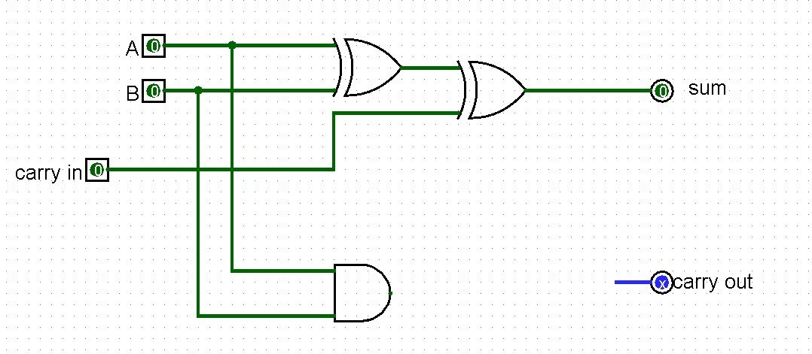
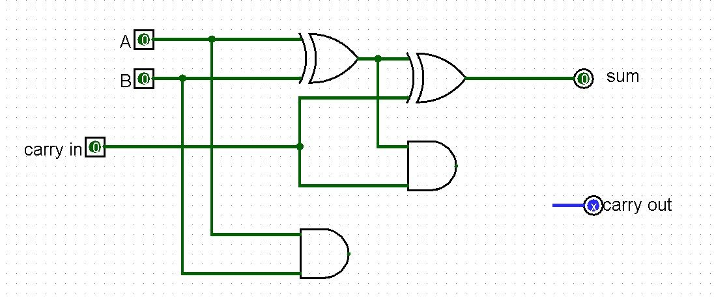
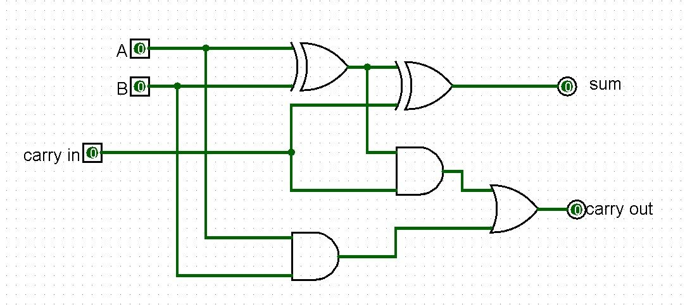

From Gates to Adders
Sections 3.1–3.3 | Estimated time: ~1.75 hours
3.1 From Gates to Circuits: What "Useful" Means
Last week you learned that a single gate can answer a yes-or-no question about one or two bits, and that one gate type — NAND — can build all the others. That is the alphabet of digital logic.
But an alphabet is not a language. Nothing you have built so far can add two numbers. Nothing can look at a 3-bit code and pick out one of eight things. Nothing works on a whole byte at a time.
This week you build circuits that do. And unlike the practice circuits of Week 2, these are parts you keep. The 8-bit adder you build this week becomes the arithmetic core of the ALU. The decoders become the selection logic inside the processor and its memory. When you finish the CPU at the end of this course, these exact circuits will be inside it — not rebuilt, not redesigned. The same ones.
What "useful" means
A gate makes a decision about one or two bits. Useful work means two things a gate cannot do alone:
- Arithmetic on multi-bit values. Not "is this bit 1?" but "what is 77 plus 38?"
- Selection among many options. Not "are both inputs high?" but "of these sixteen things, which one did that code mean?"
Those are the week's two families, and they stay separate:
- Circuits that compute — adders, and comparators. They take values in and produce a new value out.
- Circuits that select — decoders, multiplexers, encoders. They take a code in and identify or route something.
You will build both. This page and the next one are the computing half.
Every circuit this week is built from the gates you already have. The adder is XOR, AND, and OR. The decoder is NOT and AND. Nothing has been added to the set of primitives.
What changes is the arrangement. That is worth stating plainly, because it is the central idea of hardware design: complexity comes from composition, not from new parts.
These parts have exact names
One practical consequence of the components framing. Each circuit you build this week has a specified tab name and specified pin names, and both are part of its interface. Week 6 looks for a circuit called ADDER_8BIT with pins named a, b, cin, sum, and cout. A circuit that works perfectly but names its output result is not the component Week 6 is expecting.
Build them the way the assignment specifies, the first time.
Combinational circuits open Unit 3: Fundamentals of Digital Logic Design in Saylor CS301. Log into your CS301 course page and navigate to Unit 3. It covers adders and decoders as definitions; the build-up sequencing, the carry-propagation timing, and the components framing are covered here and not there.
3.2 The Half Adder: Adding Two Bits
Start with the smallest possible question: what does it take to add two single bits?
Three of the four cases are easy.
0 + 0 = 0
0 + 1 = 1
1 + 0 = 1
1 + 1 = ?The fourth is the whole problem. One plus one is two, and two does not fit in one bit. In binary, 1 + 1 = 10 — a zero in this column and a one carried into the next.
So adding two bits needs two outputs, not one:
- a sum bit — what stays in this column
- a carry bit — what moves to the next column left
That second output is the entire reason an adder is more than one gate.
Which gates produce them
Look at the sum column across all four cases: 0, 1, 1, 0. That is XOR — output 1 when the inputs differ.
Now the carry column: 0, 0, 0, 1. That is AND — output 1 only when both inputs are 1.
The half adder is those two gates, side by side, reading the same two inputs. That is worth noticing explicitly: the half-adder truth table is just the XOR and AND truth tables printed next to each other. Nothing was invented. Two gates you already know were pointed at the same pair of inputs.
| A | B | Sum (A ⊕ B) | Carry (A · B) | Circuit |
|---|---|---|---|---|
| 0 | 0 | 0 | 0 |  |
| 0 | 1 | 1 | 0 |  |
| 1 | 0 | 1 | 0 |  |
| 1 | 1 | 0 | 1 |  |
The highlighted last row is the interesting one, and it is also the limitation. A half adder produces a carry, but it has nowhere to accept one. That is fine for the rightmost column of an addition, where nothing has been carried in yet. It is useless for every other column — which is the next section.
3.3 The Full Adder: Accounting for Carry-In
Add two multi-bit numbers by hand and you work column by column, right to left. The rightmost column takes two digits. Every other column takes three — its own two digits, plus whatever was carried out of the column to its right.
1 1 ← carries
0 1 1 1
+ 0 0 1 1
---------
1 0 1 0A half adder cannot do those inner columns. It has two inputs and there are three things to add. What is needed is a circuit that accepts a carry-in as a first-class input alongside A and B — a full adder.
Built from two half adders and an OR
Here is the useful part: you do not need new ideas to build one. A full adder is two half adders and a single OR gate, and it is best understood one gate at a time.


sum. Adding three bits is adding two, then adding the third to the result.

cout. Five gates total: two XOR, two AND, one OR.There are two separate ways this column can produce a carry: A and B were both 1, or the partial sum and the carry-in were both 1. Either one is sufficient, and they cannot both happen at once.
"Either of these, and I do not care which" is exactly what an OR gate means. That is the whole justification.
It is worth being clear about what the OR is not doing: it is not adding the two carries together. Two carries out of one column never occur, so there is nothing to add. It is reporting whether at least one happened.
| Cin | A | B | Sum | Cout |
|---|---|---|---|---|
| 0 | 0 | 0 | 0 | 0 |
| 0 | 0 | 1 | 1 | 0 |
| 0 | 1 | 0 | 1 | 0 |
| 0 | 1 | 1 | 0 | 1 |
| 1 | 0 | 0 | 1 | 0 |
| 1 | 0 | 1 | 0 | 1 |
| 1 | 1 | 0 | 0 | 1 |
| 1 | 1 | 1 | 1 | 1 |
Read the last row as a sanity check: 1 + 1 + 1 = 3, which in binary is 11 — sum 1, carry 1. The circuit agrees.

That redrawing is not cosmetic. Once the full adder is a named subcircuit with five pins, its internals stop mattering. You place it, wire its pins, and move on — which is exactly what makes the next page possible.
Check Yourself
Not graded, not recorded — just a way to find out whether the last two sections landed before you meet them again in a 100-point assignment.
One full adder handles one column. Eight of them, chained so each stage's carry-out becomes the next stage's carry-in, add two whole bytes.
That is the next page, and it is where this stops looking like an exercise — the circuit you get at the end of it is the one that does arithmetic inside your processor in Week 6.